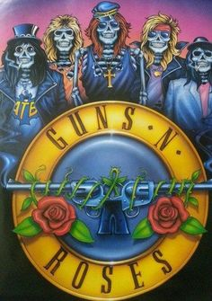

escuchando ahora

<<<<<<< Updated upstream
Appetite for Destruction
=======Appetite for Destruction
>>>>>>> Stashed changesWelcome to the Jungle
00:01
04:30

 >>>>>>> Stashed changes
>>>>>>> Stashed changes